This page is dedicated to the postdoctoral researchers with whom I have
had the privilege to work. I have been fortunate to collaborate with
many talented mathematicians at an important stage of their careers,
and I am grateful for the intellectual energy, creativity, and
collegiality they brought to our research community.
The entries below summarize their current or most recently recorded
professional positions. Career information is updated periodically.
Postdoctoral Researchers
1) Misha Rudnev
Currently Professor of Mathematics at the University of Bristol.
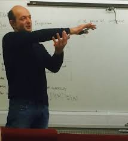
2) Ignacio Uriarte-Tuero
Currently Professor of Mathematics at the University of Toronto.
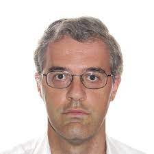
3) Leonid Slavin
Currently Professor of Mathematics at the University of Cincinnati.
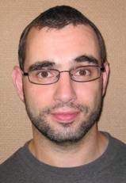
4) Le Anh Vinh
Currently Professor of Mathematics at Vietnam National University in Hanoi.

5) Eyvindur Palsson
Currently Associate Professor of Mathematics at Virginia Tech.
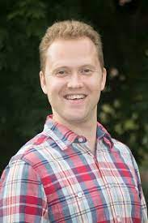
6) Yorgis Petridis
Currently Associate Professor of Mathematics at the University of Georgia.
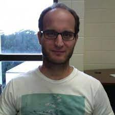
7) Alex Rice
Currently Professor of Mathematics at Millsaps College.
8) Kyle Hambrook
Currently Assistant Professor of Mathematics at San Jose State University.
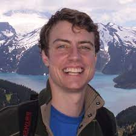
9) Evan Dummit
Currently a lecturer at Northeastern University.
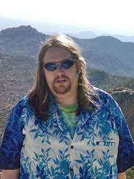
10) Thang Pham
Currently Professor of Mathematics at Vietnam National University in Hanoi.
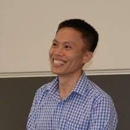
11) Charles Wolf
Currently a systems engineering hardware laboratory manager at LSI Corporation.
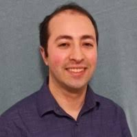
12) Yakun Xi
Currently Assistant Professor of Mathematics at Zhejiang University.
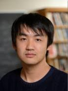
13) Emmett Wyman
Currently Assistant Professor of Mathematics at Binghamton University.
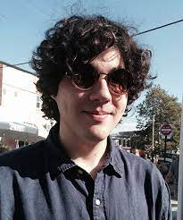
14) Neeraja Kulkarni
Currently Visiting Assistant Professor at the University of Rochester.
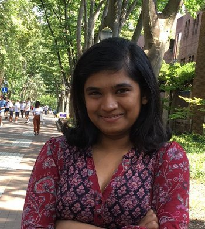
15) Vishal Gupta
Currently Visiting Assistant Professor at the University of Rochester.
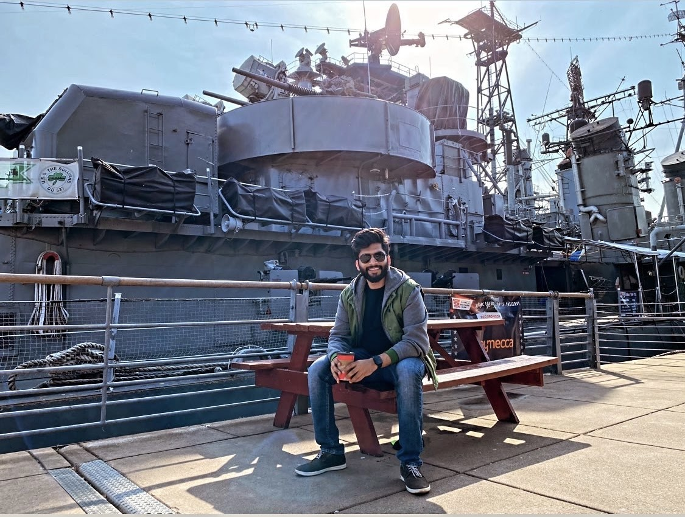
Career Statistics
Postdoctoral researchers with tenure-track positions at
Ph.D.-granting institutions: 9/13 (69%).